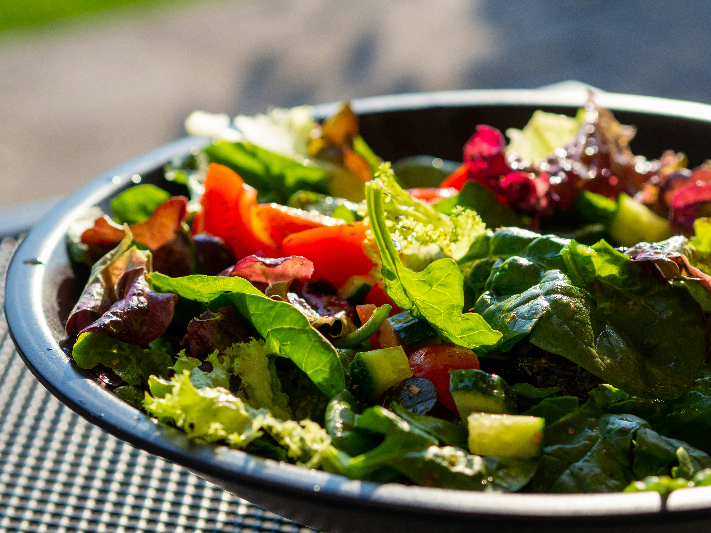

Garden Salad Recipe

There really are no rules when it comes to a Garden Salad. Any greens and any vegetables will do, all tied together with a classic and simple salad dressing. Make this your own!
Ingredients
Salad
- 1 small head iceberg lettuce or leafy green, chopped into big bite size pieces (5 to 6 big handfuls)
- 1 cup cherry or grape tomatoes, halved (~125g/4oz), or 2 tomatoes cut into wedges or chunks
- 1 cucumber , sliced
- 1 carrot , peeled and grated using a box grater
- 1 tsp parsley or chives, very finely chopped
Dressing
- 1 tbsp cider vinegar
- 3 tbsp extra virgin olive oil
- 1/2 tsp Dijon Mustard
- 1/2 tsp cooking/kosher salt
- 1/2 tsp black pepper
Steps
- Dressing: Shake Dressing in a jar. Taste and adjust - more oil for creamier/less tang, vinegar for more tang, sugar if you want touch of sweet.
- Toss: Place all Salad ingredients in a big bowl. Pour over Dressing. Toss well.
- Serve: Transfer to serving bowl and serve immediately!
Home